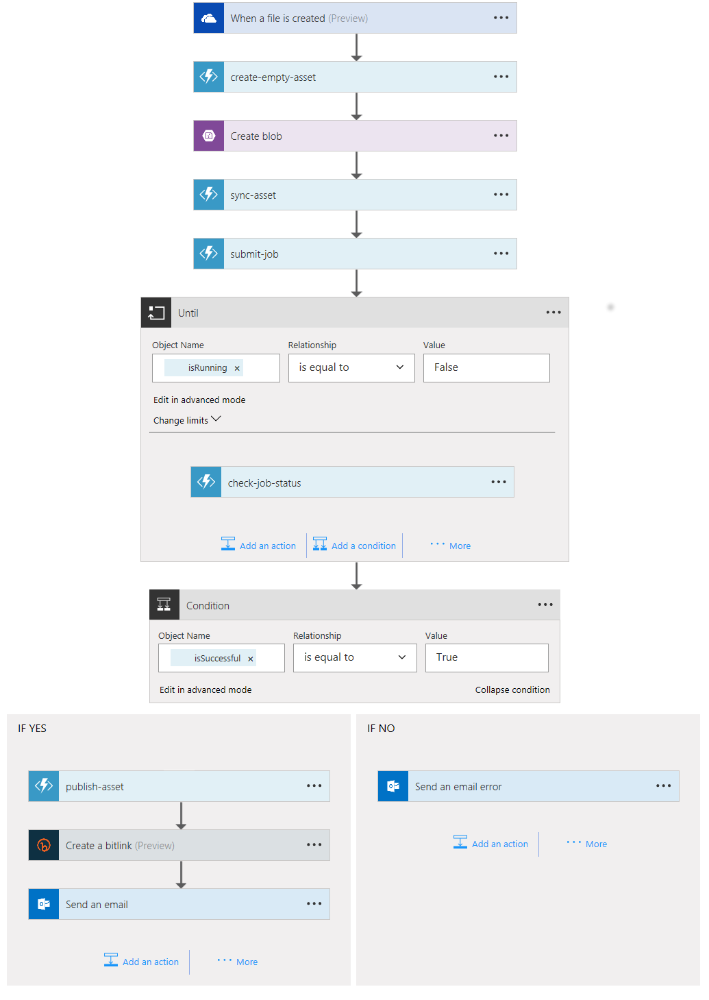
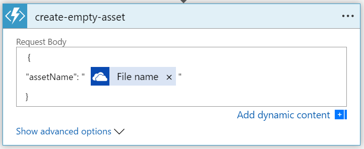
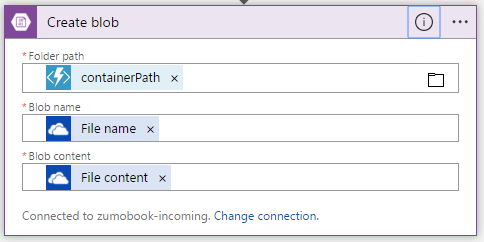
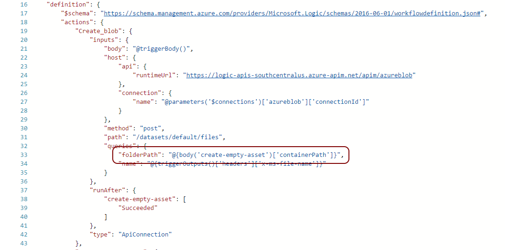
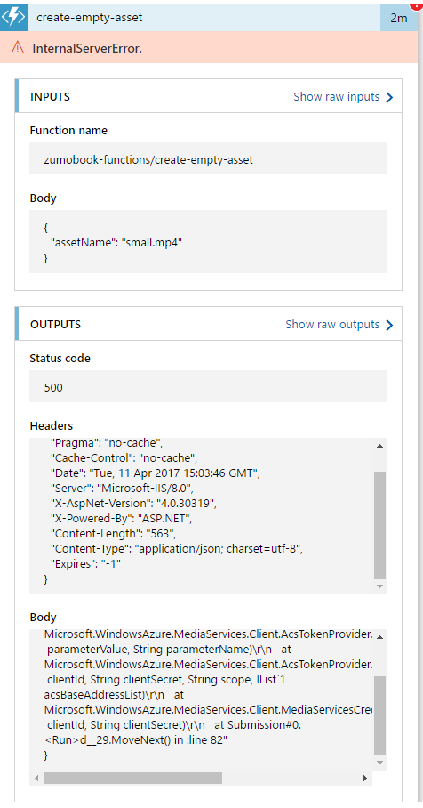
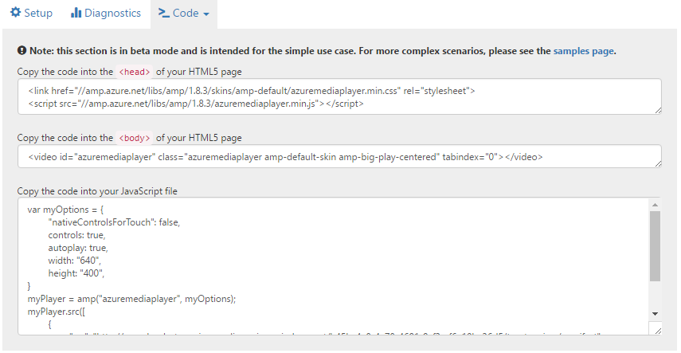

Azure Media Services¶
One of the common use cases for mobile applications involves video streaming. In the consumer space, this can include applications like Hulu or Netflix along with video reviews and new segments in apps like CNN and CNET. In the enterprise space, we see video learning and employee broadcast solutions.
Whatever their source, they have some basic functionality in common:
- The video asset is uploaded and converted (also known as encoding) to a streaming format.
- A live video channel can be provided for multiplex streaming to a large audience.
- The encoded video is provided to clients for download with a suitable web endpoint.
- Additional services extract information from the video for search capabilities.
Many enterprises wrap such functionality in a combined web and mobile site to provide streaming video for eLearning. We are going to look at what it takes to produce the mobile side of such a site in this section.
The Video Search Application with Media Services¶
We are going to produce a media services mobile application for this section, based on our last example for Azure Search. In the new example, this is the approximate flow of the application:

The administrator will upload an MP4 video via the Visual Studio Storage Explorer. This will be automatically picked up by an Azure Function that encode the video, placing the encoded video into a download area. The next Azure Function will pick up that video and use Cognitive Services on it to extract information that can be searched and insert that information into the Azure Search instance. Finally, a third Azure Function will insert the data about the video into a database so that it can be picked up by Azure Mobile Apps. We are going to use three distinct operations here because encoding and cognitive services are asynchronous - we want to kick them off and let them complete in their own time.
On the client side, we will use the Azure Search instance to find apps, display the information held within Azure Mobile Apps, and allow the user to stream the video using the video player.
As you can see, there are many more services in use in this example than our previous examples:
- Azure Media Services is used for video encoding and streaming endpoints.
- Azure Logic Apps are used for workflow automation.
- Azure Functions are used for automation.
- Cognitive Services are used to extract information from the videos.
- Azure App Service is used to act as a coordinator for the mobile app.
- Azure Storage is used to store the individual video assets and for some queuing capabilities.
- SQL Azure is used as the backing store for the Azure Mobile Apps data store.
This is now a fairly typical mobile application. We are using 8 different Azure services in a composite manner to provide the facilities needed by our application.
Creating the Mobile Encoding flow¶
When I look at the architecture for our mobile backend, I see two distinct parts. The first is the backend flow that processes the incoming videos. As videos are uploaded, they need to be injected into a queue. From there, a series of processes are kicked off to process the incoming video. First, the video is encoded; then data is extracted from the video for search purposes; finally, the video is added to the SQL database so it can be searched.
The other flow is from the mobile client - it connects to the App Service and makes requests based on what it needs to do. In this case, we have a set of data tables for providing data about the video and a few custom APIs for handling search and video streaming.
Let's take each of these in turn. The configuration of most of the services have already been discussed, so I will not go over them and only provide the options I used. This includes Storage, Search, SQL Azure, and Functions.
Creating pre-requisite services¶
Before I start with the new services, I need an Azure Storage account, an [Azure Search] instance and an Azure Function App. I've covered all these items in previous sections, so I won't go into them here. The configuration is as follows:
- My Azure Storage account called
zumomediach7.core.windows.netas General Purpose storage with LRS replication. - My Azure Functions app called
zumomediach7-functions.azurewebsites.netin the Consumption Plan. I'm using myzumomediach7storage account. - My SQL Azure service is called
zumomediach7.database.windows.net. - My SQL Azure database is called
videosearchin the B Basic pricing plan. - My Azure App Service is created via the Mobile App template and called
zumomediach7.azurewebsites.net. It has an B1 Basic app service plan associated with it.
In addition, I've linked the SQL Azure database and storage accounts to the App Service via the Data Connections menu option.
Our resource group looks quite extensive now:

Configuration for the services is as follows:
Azure Storage has a container for incoming videos called incoming.
Azure App Service has a basic TableController which is based on the following DTO model:
using Microsoft.Azure.Mobile.Server;
namespace Backend.DataObjects
{
public class Video : EntityData
{
public string Filename { get; set; }
public string VideoUri { get; set; }
}
}
This encompasses information from the majority of the book thus far. If you are uncertain on how to perform any of this configuration, review the appropriate sections of the book:
Azure Search is there
One of the things I've added into this project that I don't describe is the integration with Azure Search. I use this to integrate Cognitive Services with the solution so that I can search for videos based on their content (audio, video or metadata). You can use this as a research project.
Creating an Azure Media Services account¶
So far, we've done a lot of infrastructure work. We've generated an Azure Mobile App that our mobile app can use to retrieve information about the videos, generated an Azure Search instance with a suitable index, and a storage account for processing the videos. We now want to move onto the meat of this section - working with video. In order to do that, we will need an Azure Media Services account.
Creating an Azure Media Services account is very similar to other Azure resources. Log in to the [Azure Portal] and open the resource group you are using to hold all the resources for this application.
- Click + ADD to add a resource to the resource group.
- Search for Media Services, select it, then click on Create.
- Fill in the form:
- Select a name for your service. It needs to be unique within the service.
- Select your existing storage account (note the limitations on the replication policy if you use your own).
- Ensure the region matches your storage account and other resources.
- Click Create.

The Media Services accounts may take a couple of minutes to create. Do not continue until the deployment is complete.
Testing tools for Media Services
If you intend to do any development in Azure Media Services, you should download and become familiar with the Azure Media Services Explorer. this is a test tool for Windows that allows you to upload, download, process, encode and package assets ith Azure Media Services. You should also grow a collection of test videos. A great starting point are these videos from TechSlides.
You could stop here and do all the work manually. If you wish to check out the full set of tutorials, follow the official documentation:
The Encoding Pipeline¶
There is an excellent sample that uses Azure Functions and Azure Logic Apps as a media workflow. The Azure Functions do the actual processing, using the Azure Media Services SDK to communicate with the Media Services resource, and the Logic App (below) is used to control the workflow and ensure it works properly.

To create this flow, first create the Azure Functions required by the flow in the Function App. There are five Functions that are required:
- check-job-status
- create-empty-asset
- publish-asset
- submit-job
- sync-asset
Start by creating the shared and presets folders. You can do this using the App Service Editor, which is located in the Function app settings. Just create each file and then copy-and-paste the contents into the file.
The source code for each function is in the referenced project. Create the Function from the GenericWebhook-CSharp template. Then add the project.json file, which is needed to load the Media Services SDK from NuGet. Once you save the project.json file, let the NuGet restore happen before continuing. You can check the Log window to ensure it is complete. Finally, copy-and-paste the code for the run.csx file.
Next, create a Logic App:
- Close the Function App to return to your Resource Group.
- Click Add at the top of the blade.
- Search for and select Logic App.
- Click Create.
- Give it a name (like
zumobook-logicapp) and ensure the location is the same as all your other resources, then click Create.
After deployment, we can set up the logic app. Click the newly created logic app to open the Logic Apps Designer. The first thing you want to add is a Trigger - something that triggers the execution of the workflow. You can upload a file to OneDrive or Dropbox, for example. In this example, I'm going to use my OneDrive IncomingVideos folder:
- Find and click OneDrive. You may have to click SEE MORE to find it.
- Sign in to create a connection to OneDrive. You will also have to authorize Logic Apps to access your information.
- Click the folder icon to Select a Folder. Click > next to Root, then IncomingVideos. It will be listed as
/IncomingVideos.
Use the folder picker
Some of the triggers will encode the arguments. Use the folder picker rather than typing in the box if your trigger doesn't seem to fire successfully.
Now that we have the trigger, we need to continue building the Logic App based on the diagram above. There are a few types of steps - a Function step (where an Azure Function is called via a Webhook):
- Click + New step, then Add an action.
- Find and click Azure Functions (you may have to click SEE MORE).
- Click Azure Functions - Choose an Azure function. If you only have one Function App, it will be added automatically, otherwise, select the required Function App name.
- Click Azure Functions - {your Function App}. It will load the list of functions.
- Click the name of the function you wish to add as the step. The first one is
create-empty-asset. -
Enter the Request Body based on the comment at the top of each Azure Function. For instance, the
create-empty-assetshould look like this:
The Name can be added by clicking Add dynamic content, then finding the appropriate field.
After create-empty-asset has been complete, you may want to click Save to save your work. Then continue by clicking + New step, then Add an action. The next step is a Create blob step. You can use the search box to find actions to perform. The Create blob step should look like this when you are finished.

When you do configure this step in the Logic Apps Designer, you will note that the containerPath is not available from the dynamic content. When the Webhook returns, it provides a JSON response. The JSON response is documented at the top of the code of each Azure Function. To enter this value, switch to the Code view, find the Create_blob action, look for the queries section, then insert the following value:

Once you have entered the value, click Save, then Designer to switch back to the designer view. Continue to add sync-asset as an action. The request body will have to be set within the code view as it relies on the output of create-empty-asset. Set the body section to:
"body": {
"assetId": "@{body('create-empty-asset')['assetId']}"
}
Use the template to create everything for you!
The sample has a "Deploy to Azure" button that allows you to create all the functions and the logic app in one swoop. It's great to understand how Logic Apps are put together, but if you would rather get on with it, just use the shortcut.
Linking the submit-job next, set the body in the Code view as follows:
"body": {
"assetId": "@{body('create-empty-asset')['assetId']}",
"mesPreset": "Adaptive Streaming"
}
The next step is an "Until" step. You are not limited to just a straight step-flow with Logic Apps. You can do loops and conditional execution as well. In this case, the submit-job Azure Function kicks off an encoding job for the incoming video. However, the process to encode that video can take some time. Even a small video can take upwards of 15 minutes to encode because of queuing and process limitations. The Add a do until step is in the "More" section after you click + New step. Start by clicking on Add an action within the Until loop. Add the check-job-status Azure Function with a request body:
"body": {
"jobId": "@{body('submit-job')['jobId']}"
}
While you are in the code view, set the "expression" field for the Until loop to the following:
"expression": "@equals(body('check-job-status')['isRunning'], 'False')",
Check the template if you get lost!
You can configure everything within the Code view, so if you get lost, just use copy-and-paste to configure each step within the logic app.
After the Until loop, we can add a Condition to check if the isSuccessful field returned by the latest invocation of check-job-status was true. Click on Edit in advanced mode and enter the condition @equals(body('check-job-status')['isSuccessful'], 'True'). You now have two sections - a YES and a NO section. My NO section uses "Outlook.com - Send an email" to send me an email. I use the File name field in the body to indicate what file was problematic.
On the YES side, I am going to add multiple steps. Firstly, I will add an Azure Function for publish-asset with a body:
"body": {
"assetId": "@{body('submit-job')['mes']['assetId']}"
}
Technically, this is now a complete encoding pipeline. However, I also want to put the asset into the database so that my client can download it. In the canonical example, the URL of the encoded video is published at @{body('publish-asset')['playerUrl']}. I can pass that into a new Azure Function that inserts it into the database. I can create a new function from directly within the Logic App. However, there are a number of problems with that. Firstly, it creates a Node.js function and I like C#. Secondly, the code editor leaves a lot to be desired. It's a small text box with no Intellisense. Use the Save button to save your Logic App, then close the Logic Apps Designer and switch over to your Azure Function App.
Additional Resources Created
If you have created your Logic App correctly, you will note additional resources have been created for the connections to the Azure Blob storage, OneDrive and potentially Outlook. These are part of your Logic App and should not be configured separately.
Use the GenericWebHook-CSharp template to create a Function called insert-into-database. The code for the Webhook is as follows:
/*
This function check a job status.
Input:
{
"fileName": "some-name",
"url": "some-url"
}
Output:
{
"dbId": "some-guid" // The new object reference
}
*/
#r "Newtonsoft.Json"
#r "System.Data"
using System;
using System.Configuration;
using System.Data.SqlClient;
using System.Net;
using Newtonsoft.Json;
public static async Task<object> Run(HttpRequestMessage req, TraceWriter log)
{
log.Info($"Webhook was triggered!");
string jsonContent = await req.Content.ReadAsStringAsync();
dynamic data = JsonConvert.DeserializeObject(jsonContent);
if (data.url == null || data.fileName == null) {
return req.CreateResponse(HttpStatusCode.BadRequest, new {
error = "Please pass all properties in the input object"
});
}
var connectionString = ConfigurationManager.ConnectionStrings["MS_TableConnectionString"].ConnectionString;
log.Info($"Using Connection String {connectionString}");
var dbId = Guid.NewGuid().ToString("N");
try
{
using (var sqlConnection = new SqlConnection(connectionString))
{
using (var sqlCommand = sqlConnection.CreateCommand())
{
log.Info("Initiating SQL Connection");
sqlConnection.Open();
log.Info("Executing SQL Statement");
sqlCommand.CommandText = $"INSERT INTO [dbo].[Videos] ([Id], [Deleted], [Filename], [VideoUri]) VALUES ('{dbId}', 0, '{data.fileName}', '{data.url}')";
var rowsAffected = sqlCommand.ExecuteNonQuery();
log.Info($"{rowsAffected} rows inserted.");
sqlConnection.Close();
}
}
}
catch (Exception ex)
{
return req.CreateResponse(HttpStatusCode.BadRequest, new {
error = ex.Message
});
}
return req.CreateResponse(HttpStatusCode.OK, new {
greeting = $"{dbId}"
});
}
This inserts a record into the Videos table with the filename and URI specified. I can now add this function to the YES column in my Logic App by specifying the following body in the Code view:
"body": {
"fileName": "@{triggerOutputs()['headers']['x-ms-file-name']}",
"url": "@{body('publish-asset')['pathUrl']}"
}
There are three URLs that are returned by the previous step:
pathUrlis the path to the assets (but not the filename).smoothUrlis the real-time streaming endpoint.playerUrlis a web-page with an embedded player.
You need to use the corresponding URL for your implementation. If you are unsure, then store both the pathUrl and smoothUrl in the database (which will require a modification of the model). The playerUrl can be computed on the client if you need it.
Before we can try this pipeline out, the other resources must be specified as Application Settings inside the Function App:
AMSAccountis the name of your Media Services resource.AMSKeyis the primary key for your Media Services resource.MediaServicesStorageAccountNameis the name of your Azure Storage resource.MediaServicesStorageAccountKeyis the primary key for your Azure Storage resource.MS_TableConnectionStringis the connection string to your video database (from your App Service).
Once these are set, you are ready to test your logic app. Go to the Logic Apps Designer and click Run. This allows you to monitor the progress of the workflow live. Then drop a video file in the /IncomingVideos folder of your OneDrive connection and watch the process. It's likely that something will go wrong the first time. In the case of Azure Functions, the error will be displayed:

If the error is in a Logic App provided trigger, then consult the Diagnostics and Log search menu items under Monitoring. For the Azure Functions triggers, it is more informative to consult the error logs in the Function App. Open the Monitor tab to check the logs for the latest run. Also, you can create a test run with the appropriate input object and/or place more logging in the Azure Function. I faked this error by removing the AMSAccount application setting. If you have copied the source code directly, it's likely that any errors will be in the app settings.
Insert-to-Database Failures
The insert-to-database function and the logic app will fail because the database is not created until the first request by a client. You can either pre-create the database or use the client that is developed before you try out the encoding pipeline.
The Video Mobile App¶
Now that the backend has been brought online and we can populate it with videos, it's time to turn our attention to the client app. I've started with an app very similar to the Task List. The models are slightly different (since the data set is different), but ultimately, the app provides a list of videos to play. You can find the starting project on GitHub.
Use the starting point to create the database
In the last section, I mentioned that one of the functions would not work because the database was not created until the first client request. You can use the starting point for the project to create the necessary database. Create all the backend resources, then run the client to create the database, then test out the encoding pipeline.
You can integrate any video player that supports a streaming endpoint, and there are several to choose from - each with their own complexities for integration. For simplicity, I am going to integrate the Azure Media Services Player - a web-based streaming media player which I will integrate into a WebView within the page. Let's start by hooking up a new view in the shared project. The new view is called Pages/VideoDetail.xaml:
<?xml version="1.0" encoding="utf-8" ?>
<ContentPage
x:Class="VideoApp.Pages.VideoDetail"
xmlns="http://xamarin.com/schemas/2014/forms"
xmlns:x="http://schemas.microsoft.com/winfx/2009/xaml">
<StackLayout>
<WebView
x:Name="browser"
HorizontalOptions="FillAndExpand"
VerticalOptions="FillAndExpand" />
</StackLayout>
</ContentPage>
This page creates a WebView that occupies the entire page. There is a backing C# source file as well that implements the viewer:
using System;
using System.Collections.Generic;
using System.Linq;
using Xamarin.Forms;
using Xamarin.Forms.Xaml;
namespace VideoApp.Pages
{
[XamlCompilation(XamlCompilationOptions.Compile)]
public partial class VideoDetail : ContentPage
{
public VideoDetail (Models.Video video)
{
InitializeComponent ();
var htmlSource = new HtmlWebViewSource();
var sourceInfo = @"
<html>
<head>
<title>Test</title>
<link href=""https://amp.azure.net/libs/amp/1.8.3/skins/amp-default/azuremediaplayer.min.css"" rel=""stylesheet"">
<script src=""https://amp.azure.net/libs/amp/1.8.3/azuremediaplayer.min.js""></script>
</head>
<body>
<video id=""azuremediaplayer"" class=""azuremediaplayer amp-default-skin amp-big-play-centered"" tabindex=""0""></video>
<script>
var myOptions = {
""nativeControlsForTouch"": false,
controls: true,
autoplay: true,
width: ""640"",
height: ""400"",
};
myPlayer = amp(""azuremediaplayer"", myOptions);
myPlayer.src([
{
src: ""{Binding Source}"",
type: ""application/vnd.ms-sstr+xml""
}
]);
</script>
</body>
</html>
";
htmlSource.Html = sourceInfo.Replace("{Binding Source}", video.VideoUri);
browser.Source = htmlSource;
}
}
}
The HTML and Javascript libraries that I use here are provided by Azure Media Services. You can find them as follows:
- Start Azure Media Services Explorer and connect to your Media Services account.
- Right-click a published video, then select Playback -> with Azure Media Player.
- A web-page will open. Click Code -> Get Player Code (under the video).
The code will be displayed:

I replaced the src object with something I can string-replace later on. The player is completely cross-platform. You do, however, have to specify the height and width. One of the advantages of using a native control is that it will set the height and width for you.
Wrap Up¶
Obviously, this isn't the prettiest app that has been produced. However, it is functional and it demonstrates the basic capabilities. We don't have to stop where we did, however.
- We could use Cognitive Services to extract the audio track and submit to an Azure Search facility. We could then allow searching of the Azure Search facility to come up with a list of videos that match based on the audio track. This is, quite frankly, something that still amazes me and something that we could not do without the Azure Cloud. The Cognitive Services integration is available as the advanced option in the sample for the media processing workflow.
- We could adjust the
insert-into-databaseFunction to extract metadata from the MP4 file. The MP4 file contains a whole host of information. This can be inserted into the database so you can display it. You could also add a JSON file in the upload to provide additional content that is inserted into the database. - We could provide ratings and other controls on the list. This can be stored on the mobile backend as well to provide information to other users.
Video media is one of those areas of development that is complex to understand and implement, but has so much potential in the mobile space.